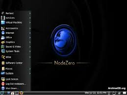

List of Best Operating Systems (OS) for Hacking
Top 10 OS for Ethical Hacking in 2025
Let's discuss the leading operating systems for ethical hacking in 2025, equipped with robust tools, specifications and features.
It is the most widely used ethical hacking OS. It is a Debian-based Linux - based operating system developed for penetration testing and digital forensics. It is financed and maintained by Offensive Security Ltd. The greatest and most widely used operating system for hackers is Kali Linux. It includes the first Nexus device open-source Android penetration test. The forensic mode is another excellent feature of the Kali Linux operating system.
Features:
Testing for penetration is possible.
Both a 32-bit and 64-bit version of this platform is available.
Kali Linux can be updated.
This OS supports complete disc encryption.
The network-based Kali Linux installation can be easily automated and customized.
Support for live USB installations.
Forensic work can be done using its forensics mode.
System Requirements:
2 GB of RAM
20 GB of disk space
32- or 64-bit CPU (single-core) with 2 GHz speed or better
High-definition graphics card and monitor
Broadband internet connection
To give ethical hackers the best-in-class experience of penetration and security testing in real-world systems, Parrot Security OS is built on Debian GNU/Linux and integrated with the Frozen box OS and Kali Linux. Additionally, the Frozen box team intends to use it to offer vulnerability evaluation and mitigation, computer forensics, and anonymous Web browsing.
Kali repositories are used by Parrot Security OS for a variety of package updates and to include new tools.
Features:
It is offered as resource-constrained, lightweight software.
The source code is available for reading and modification.
Offers assistance from professionals to aid you with cybersecurity.
The distributed infrastructure of this hacker OS includes dedicated CDNs (Content Distribution Network).
This operating system can be shared with others.
System Requirements:
There is no need for graphic acceleration.
RAM must be at least 320MB.
It needs a dual-core CPU running at least at 1GHz.
It can boot in legacy and UEFI modes as well
The operating system installation requires at least 16GB of hard disc space.
The Hacker News
Digital Evidence and Forensic Toolkit, or DEFT, is an open-source Linux distribution. It is constructed around the DART (Digital Advanced Response Toolkit) software and is based on Ubuntu. It includes numerous well-known forensic tools and files that are useful to ethical hackers, penetration testers, IT security experts, and other people.
Features:
It is based on the Lubuntu system and includes free penetration testing and digital forensics software.
Complete support for logical acquisitions in iOS 7.1, Android, and Bitlocker-encrypted drives.
Digital Forensics Framework 1.3
System Requirements:
A 200 MHz X86 CPU and 128 MB of RAM are the minimal requirements.
Since DEFT Zero is a Live MODE edition and is based on Lubuntu, it takes a unique approach.
Samurai Web Testing Framework is essentially a live Linux system that is already set up to function as a platform for web pen-testing. The framework includes a variety of open source and free hacking tools for finding weaknesses in websites. For web penetration testing, it is frequently referred to be the ideal operating system.
Features:
Samurai Web Testing Framework is an open-source project that focuses on exploiting websites.
It has already been set up for web pen-testing.
Features that can be used to target the website for the attack.
It includes tools like WebScarab (a tool for evaluating web security applications)
and ratproxy (a program for running a web proxy server).
System Requirements:
2 GB of RAM
20 GB of disk space
32 or 64-bit CPU (single core) with 2 GHz speed or better
NodeZero is a free and open-source Linux distribution for penetration testing that uses the Ubuntu repositories for updates. It includes a collection of fundamental services that are necessary for performing a variety of tasks, together with more than 300 penetration testing tools. The dual-arch live DVD ISO image of the Linux distribution, which supports both 32-bit and 64-bit computing architectures, is available for download.
Features:

System memory diagnostic tests
Hard disk booting
Install direct
Safe mode booting
Text-mode or debug mode
System Requirements:
2 CPU (physical or virtual)
8GB RAM
20 GB free HDD space
Based on Ubuntu 18.04.6, the Linux Kodachi operating system will give you a private, non-forensic, and anonymous operating system that includes all the characteristics that someone who cares about privacy would need to be secure.
Kodachi is incredibly simple to use; all you need to do is boot it up on your computer using a USB drive, at which point you should have a fully functional operating system with established VPN and Tor connections as well as an active DNScrypt service.
Features:
Automatic connection to a VPN (all network traffic)
Automatic connection to the Tor network (browser traffic)
Automatic DNS encryption
System Requirements:
2 CPU (physical or virtual)
8GB RAM
20 GB free HDD space
Medium
It is an Arch Linux-based best distro for hacking and for penetration testers and security researchers. It is regarded as the best OS for hacking distribution for security researchers to use to undertake application-based and web security testing because it comes with over 1,600 tools. It is a serious rival to Kali Linux and Backbox in terms of tool diversity and usability.
Features:

Several window managers in a live ISO. Blackarch gets out of the way so users can complete
their tasks without interruptions
Different architectures are supported
An installer that supports source-based construction
More than 1800 tools
Install the packages one at a time or in groups
System Requirements:
2Ghz Quad-Core Processor.
6 GB Random Access Memory (RAM)
50 GB Disk Space.
High-definition graphics card.
On both 32-bit and 64-bit platforms, the Network Security Toolkit Linux distribution is based on Fedora. The goal of this bootable live CD was to give you access to the top open-source network security tools for penetration testing. This user-friendly hacking distribution turns x86 PCs through an ethical hacking tool that may be used for network traffic sniffing, intrusion detection, network packet creation, network/host scanning, etc.
Features:
Multi-Tap Network Packet Capture
Web-Based Network Security Tools Management
Host/IPv4 Address Geolocation
Network/System Monitoring
Network Intrusion Detection
Network Interface Bandwidth Monitor
Web-based Snort IDS Integration
Active Connections Monitor
System Requirements:
A i686 or x86_64 compatible CPU (Core 2 series or later)
At least 512MB of RAM (we recommend at least 1024MB if you want to use a graphical desktop)
A DVD drive and BIOS capable of booting from a DVD
A supported Ethernet (NIC) Adapter or WIFI card
For in-depth analysis and notification of software security vulnerabilities, BugTraq is a clarification mailing list. The foundation of the global security community on the Internet is BugTraq. It is the best OS for penetration testing.
Features:
A wide range of pentesting tools are available on Bugtraq, including mobile forensic tools, virus testing labs,
tools created by the Bugtraq-Community
audit tools for GSM,WIFI, Bluetooth, and RFID
integrated Windows tools
ipv6-focused tools, and standard forensics and pentesting tools.4
System Requirements:
1GHz x86 processor.
512 MB of system memory (RAM)
15 GB of disk space for installation.
Graphics card capable of 800x600 resolution.
DVD-ROM drive or USB port.
The most sophisticated, potent, and still stunning penetration testing distribution ever made. lined up with the best tools for professional ethical hackers and cyber security specialists.
Utilize Cyborg to streamline security throughout your IT infrastructure. It is true power stems from the knowledge that a tester needs a powerful and effective system, one that gains from a robust variety of tools and is combined with a stable Linux environment.
Features:
Includes over 750 penetration testing tools
Cyborg Hawk is and always will be completely free
Has the capacity to be utilised as a live operating system
Mobile Security, Wireless Security, Forensics, Stress Testing, Reverse Engineering, and Exploitation Toolkit
Full support for virtual machines. Version 1.1
It now has a repository of its own
Stable and dependable
Support for a range of wireless devices
Everything is in its proper position and the menu is well organised
An injected kernel that was patched
System Requirements:
Memory: 4 GB.
Graphics Card: NVIDIA GeForce 510.
CPU: Intel Core 2 Duo E8400.